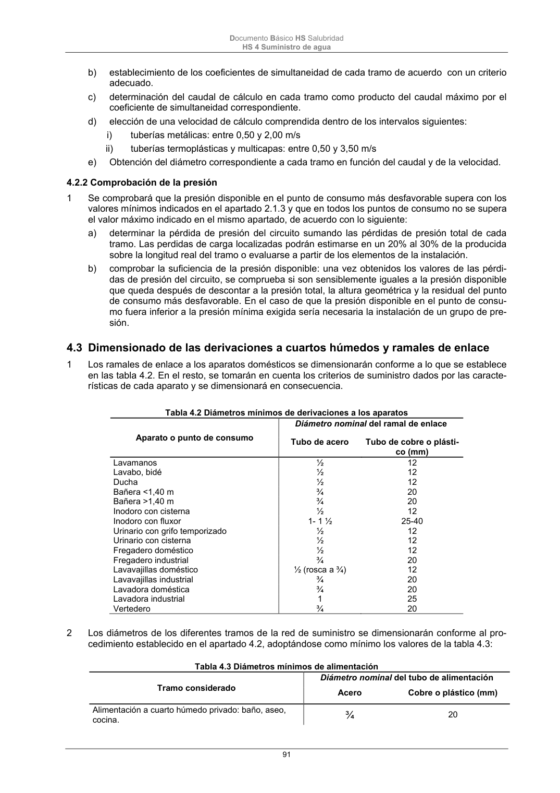

DB-HS Salubridad · edición 2022-06-14 · capa oficial
Documento DB-HS-oficial · SHA-256 del PDF 68df3caacc95f71aee2ec1ba7b2c65ae66155c21e3a8785521b8fdd4fd640d3b
Copia fiel del PDF fuente · Fuente oficial
Ficha de la disposición en la fuente oficial
Formatos: JSON del segmento · Markdown
4.2.1 Dimensionado de los tramos 1 El dimensionado de la red se hará a partir del dimensionado de cada tramo, y para ello se partirá del circuito considerado como más desfavorable que será aquel que cuente con la mayor pérdida de presión debida tanto al rozamiento como a su altura geométrica. 2 El dimensionado de los tramos se hará de acuerdo al procedimiento siguiente: a) el caudal máximo de cada tramos será igual a la suma de los caudales de los puntos de con- sumo alimentados por el mismo de acuerdo con la tabla 2.1. Documento Básico HS Salubridad HS 4 Suministro de agua 91 b) establecimiento de los coeficientes de simultaneidad de cada tramo de acuerdo con un criterio adecuado. c) determinación del caudal de cálculo en cada tramo como producto del caudal máximo por el coeficiente de simultaneidad correspondiente. d) elección de una velocidad de cálculo comprendida dentro de los intervalos siguientes: i) tuberías metálicas: entre 0,50 y 2,00 m/s ii) tuberías termoplásticas y multicapas: entre 0,50 y 3,50 m/s e) Obtención del diámetro correspondiente a cada tramo en función del caudal y de la velocidad.
